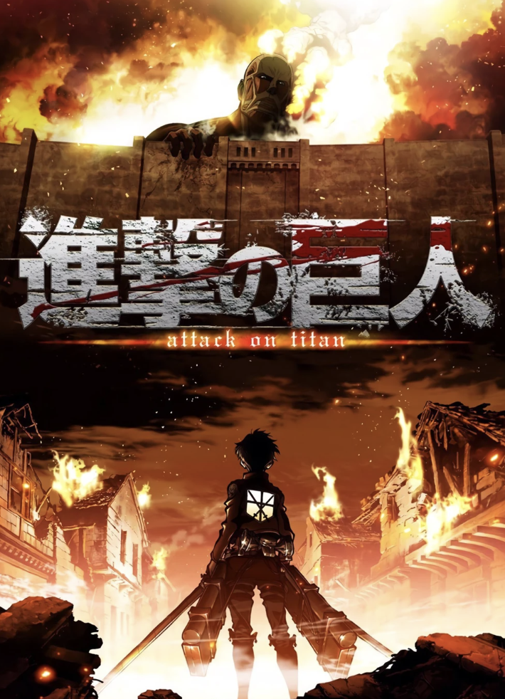
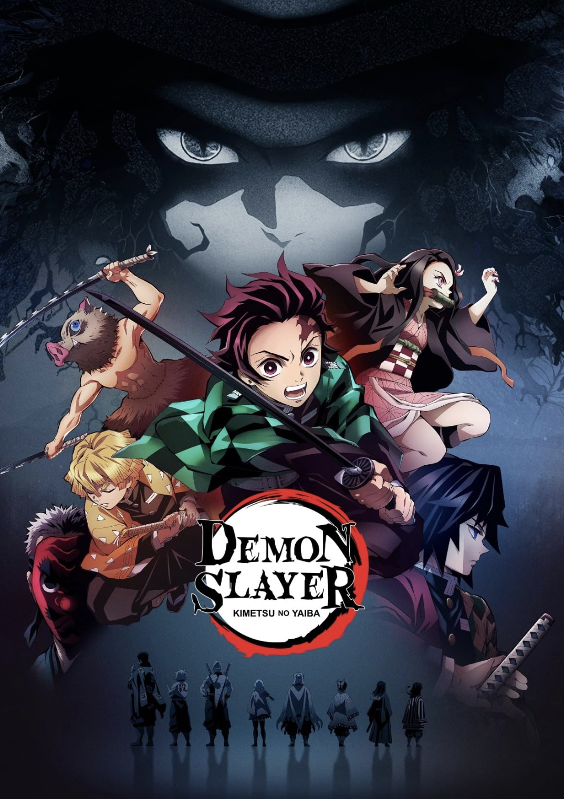
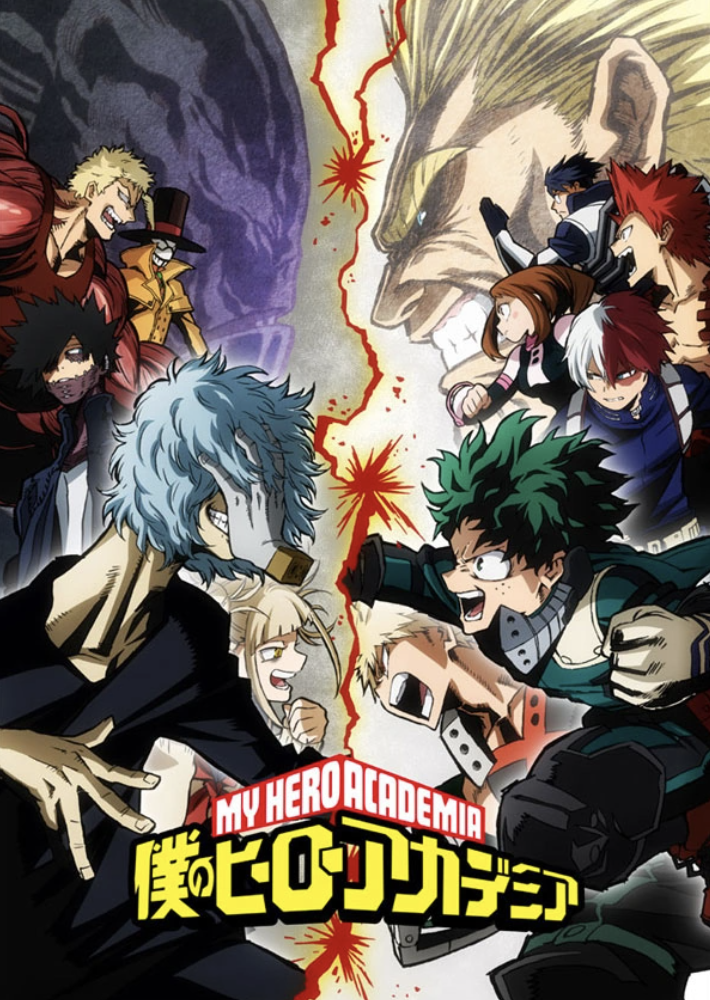
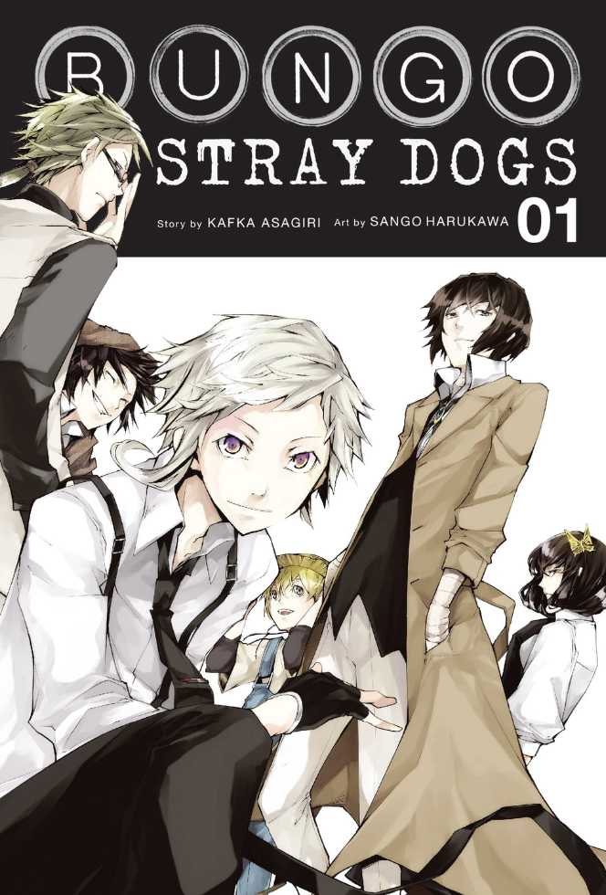
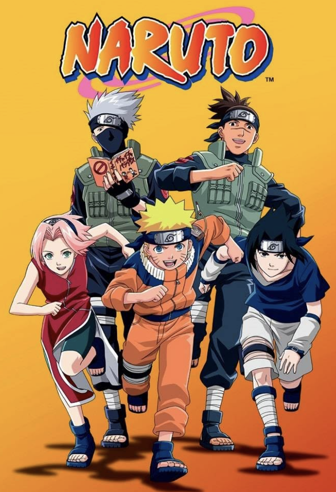

fantasy anime .ᐟ

| Poster | Review | OST / Trailer |
|---|---|---|
|  | Out of every anime I've ever watched, this is my absolute favorite. Attack on Titan has an amazing concept; which is basically man-eating titans. I loved the writing. It is very gory and absolutely brutal towards its characters, but all of the characters change and develop so well. It has such an intricate plot line. It also has really good music that I still listen to. |
|
|  | Demon Slayer has an amazing art style. Its premise is pretty similar to AOT, with man-eating demons. I love the characters here because they all have cool personalities and stories. Its brutal to its characters as well, but it does have light-hearted moments The main character, Tanjiro, is one of my favorite protagonists, because he's very nice and he STAYS nice throughout the series. |
|
|  | My Hero Academia was the very first real anime I watched, all the way back in 2020. This series introduced me to all the anime and manga that came after this. It basically follows a bunch of high-schoolers who go to hero school (they all have superpowers). I like the different arcs and backstories of the characters. I also liked the soundtrack and characted design, but I wouldn't really rewatch it because the plot and story itself isn't that interesting to me anymore. |
|
|  | Bungo Stray Dogs has an interesting concept. All of the characters take on names from famous writers, and their powers are named after the writers' most famous book. Every characters' power is pretty unique, and I like the storyline a lot. Even if I took a break from this anime/manga, I'd still come back to rewatch it. The plot is kinda unpredictable and sometimes random. This also has a really nice artstyle and soundtrack. |
|
|  | Naruto! I think this was a lot of people's first anime. This is so classic that it's called one of the big three (along with One Piece and Bleach). I like this anime because I love the journey and character development everyone has to go through, especially Sasuke and Naruto. It has a lot of filler, so the characters still get to have a lot of fun in the midst of all the action. The action sequences are very well animated too. |